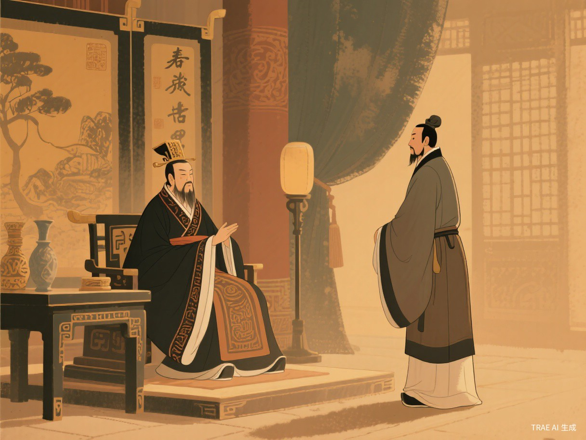
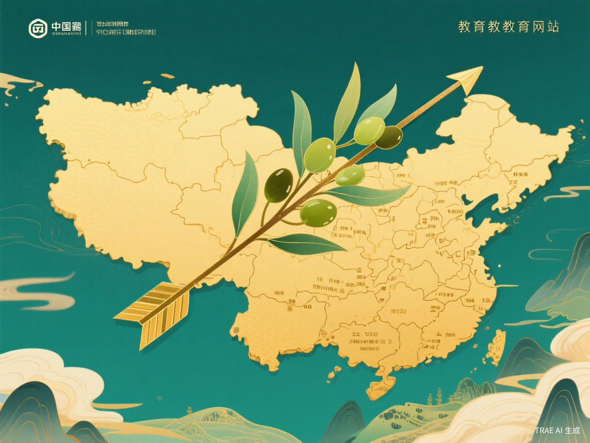

知人容人，方成大业
从齐桓公重用管仲的选择中，理解胸襟、格局与成事之道。


春秋风云，刀光剑影之中，最动人的未必是胜负本身，而是胜负之后一个人的胸襟。公子小白曾险些死于管仲一箭，登位之后却没有囿于私怨，而能听从鲍叔之言重用管仲；鲍叔深知管仲之才，甘居其下；管仲得遇明主知友，终辅齐桓公九合诸侯、一匡天下。三人之中，我对齐桓公感触最深。因为一个人能否成事，常常不只看他有没有才能，更看他能不能容下曾经伤害过自己却真正有用的人。
齐桓公的可贵，在于他把个人恩怨放在了国家大局之后。管仲曾经辅佐公子纠，并且亲自射中过小白的衣带钩。若以常情论，齐桓公杀管仲并不难，也似乎合乎“报仇”的逻辑。然而他选择的是重用。这个选择意味着他看见了比一时意气更辽阔的东西：齐国需要贤才，霸业需要格局，天下之势不等人。一个只记仇的人，只能赢得一场私人的痛快；一个能识才用才的人，才可能打开国家的局面。
容人不是没有原则的退让，而是有判断力的宽广。齐桓公并非忘记管仲曾经的箭，而是明白那一箭属于旧主之争，不能抹杀管仲治国安邦之才。真正的胸襟，不是把所有伤害都说成云淡风轻，而是在权衡轻重之后，让公共的利益、长远的目标压过狭隘的情绪。现实生活中，我们也常遇到类似的选择：同学之间有过误会，合作时是否仍能承认对方长处；竞争者曾经与自己相持，关键时是否仍愿意携手完成共同任务。若凡事只凭好恶，人才会被偏见遮蔽，机会也会在计较中流失。
齐桓公的选择还提醒我们，领导力的核心并不只是发号施令，而是让合适的人出现在合适的位置。鲍叔知人，管仲有才，齐桓公能用人，三者相遇才成就了历史佳话。倘若齐桓公不能采纳鲍叔之言，鲍叔再贤也只能空怀识才之明；管仲再有经世之略，也可能湮没于牢狱之中。由此可见，胸襟能够释放才能，信任能够激活人才。一个班级、一个团队乃至一个国家，最怕的不是无人可用，而是有才者被成见拒之门外。
当然，赞赏齐桓公，并不意味着忽视鲍叔与管仲。鲍叔的知人之明，是君臣相得的桥梁；管仲的忠于所事、尽其所能，是人才价值的证明。可齐桓公的难处正在于，他要在情感和理智之间作出决断。普通人常常站在情绪这一边，伟大者却能站在未来这一边。他没有被一箭锁住心胸，反而用一次重用改写齐国命运，这便是我最受触动之处。
今天谈齐桓公，并不是为了遥望古人而感叹传奇，而是为了照见我们自身。成长路上，我们会遭遇竞争，也会经历误解；我们会喜欢与自己相近的人，也会排斥曾经让自己不快的人。但若想真正成长，就要学会把眼光从“我受了什么委屈”移向“什么更值得完成”。能看见他人之长，是智慧；能容纳他人之长为共同目标所用，是胸怀；能在复杂关系中作出清醒选择，是格局。
一箭之仇，终不敌天下之志；一时意气，终不及长远事业。齐桓公让我明白，成大事者并非没有情绪，而是不让情绪成为牢笼；并非不记过去，而是不让过去遮住未来。愿我们也能在自己的读书、交往与奋斗中，少一些狭隘的计较，多一些识才容人的气度，在与他人的相互成就中，走向更广阔的人生。